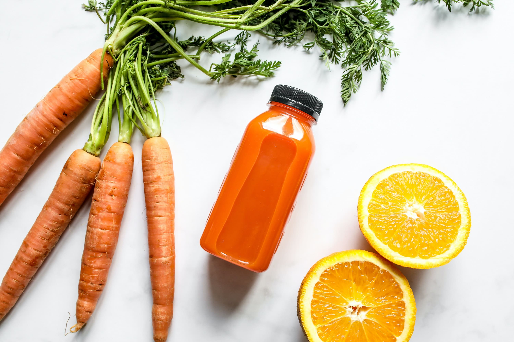
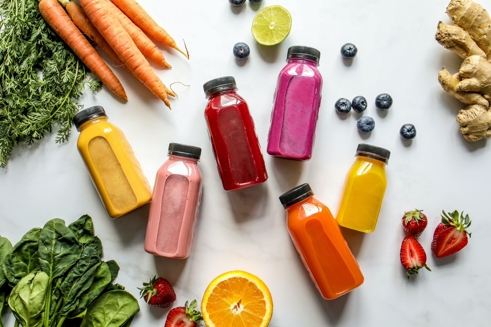

THE BENEFITS OF JUICE CLEANSE

When it comes to leading a healthy lifestyle, one thing that has become increasingly popular is juicing.
But why? What makes this approach so beneficial for our health?
This blog will explore just that the importance of juicing and why it should be a part of your lifestyle.
Why Juicing is an essential part of leading a healthy lifestyle?
Imagine having a powerhouse of vitamins, minerals and electrolytes from natural sources like apples, carrots and leafy greens!
Imagine no longer having to force down large portions of fruit or cooked veggies.
Well, that’s exactly why so many people are starting to look towards this way of life.
Juicing offers a delicious drink, that hydrates you AND gives your energy levels an extra boost, when you need it most, such as after exercise.
Natural sugars help replenish essential nutrients without artificial sweeteners or added sugar.
Your gut bacteria will also improve, aiding digestion and boosting weight loss, but that a whole other Blog!!
HOW TO PREPARE FOR A JUICE CLEANSE AND WHAT TO EXPECT

If you’d like to reset your body, why not try a juice cleanse?
Our 2-day and 4-day cleanses are the perfect way to get started.
To ensure optimal results before hitting “go” on that cleanse button, paying attention to your physical and mental wellbeing is important.
Look after your body
The best way to prepare for a cleanse is to adopt healthy eating habits and ease yourself into the cleanse.
It’s no good one day feasting on pizza or any other junk food and then starting a cleanse the next.
Instead, cut out processed foods for a few days beforehand and concentrate on fresh fruit, vegetables, seeds, nuts and good-quality protein.
When embarking on this journey, consider avoiding high-intensity exercises like cardio or weight lifting while cleansing.
Try yoga or simple stretching exercises instead.
Look after your mind
Our minds are powerful and deserve care! As you embark on your cleanse journey, take some extra time out for yourself.
Pamper your mind with a few moments of meditation or mindful reflection, it’ll be worth the effort to get the full benefits from this amazing experience.
THE POWER OF GREEN JUICE

"Green juice" isn't a specific type of juice; it's a broad term that applies to any juice that's green and/or contains green vegetables.
The ingredients don't all have to be green, but generally, the end result is a juice that's at least greenish in color.
Leafy greens, which are loaded with vitamins, minerals, and phytonutrients, are essential to maximizing the nutritional value of your green juice.
They're also rich in chlorophyll, the compound that puts the "green" in green juice.
Chlorophyll not only gives greens their color, but it's also a powerful antioxidant and can help support your body's natural detoxification pathways.
The darker the green vegetable, the more chlorophyll it contains.
The specific benefits you'll get from your green juice depend on what's in it, but here are some general health perks that apply across the board:
1.A major source of nutrients:Green juice is a concentrated source of vitamins, minerals, antioxidants and phytochemicals, because they're already in liquid form (instead of in a whole food matrix), those beneficial nutrients are generally easier to digest and absorb
2.Supports your gut health:Green juice is also a gut health superstar. "Green juices can provide essential phytonutrients like flavonoids and antioxidants to support microbial diversity and gut health
3.Promotes hydration:Green juice can help keep you hydrated, especially if it contains high-water content veggies like cucumbers. Cucumbers are 90% water2 and loaded with electrolytes like magnesium and potassium, which help maintain optimal fluid balance in your cells.
But make sure you're drinking plenty of water, too.